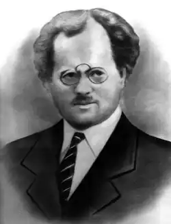

Народився Осип Турянський 22 лютого 1880 року в селі Оглядів Радехівського повіту (нині Радехівського району) на Львівщині в багатодітній селянській родині. Щоб заробити на прожиття, батько ще й теслярував.
Тому лише через особливі здібності найстаршого сина Осипа віддали до початкової школи в рідному селі. Надалі його підтримав учитель — і хлопець опинився у Львівській українській гімназії. Батько влаштував його на квартиру до свого знайомого, колишнього односельчанина Андрія Волошка. Осип узявся готувати до школи його сина. На другому році навчання батько утримувати гімназиста перестав, тому юнакові довелося заробляти на життя репетиторством. А навчався він добре, багато читав, студіював іноземні мови.
Щоправда, один неприємний випадок мало не зіпсував усі благородні наміри хлопця. Сталося це в старшому класі. Він захопився нелегальною літературою, вступив до підпільного студентського гуртка, відверто висловлювався під час лекцій, за що його виключили з гімназії. Поновили ж лише завдяки проханням батька та підтримці повітової управи. Після успішного закінчення гімназії Осип Турянський вступив на філософський факультет Віденського університету. Велична, архітектурно багата столиця тодішньої Австрійської імперії справила на юнака неабияке враження — у нього наче крила виросли. Тому тут також бере активну участь у студентському гуртку української молоді, починає писати художні твори — оповідання, нариси, статті. 1908 року в місцевому альманасі "Січ" навіть з’являються його перші оповідання, в яких він змальовує нужденне життя українського селянства, яке знав достеменно. Паралельно серйозно займається й наукою — захищає докторську дисертацію на тему "Голосний "е" в українській мові". Однак після закінчення навчання йому насилу вдалося влаштуватися викладачем мови й літератури в Перемишлянську українську гімназію. Прийшло до молодого вчителя й кохання — він одружується з дочкою місцевого адвоката Онишкевича, в них народжується син. Проте недовгим було їхнє сімейне щастя. Восени 1914 року О. Турянського мобілізували до австрійської армії, одразу ж відправили на австро-сербський фронт. Він близько бачив пекло війни. Але найстрашніше було ще попереду — сербський полон. Взимку 1915 року разом із іншими 60-ма тисячами австрійських полонених вояків його відправлено етапом через Албанські гори. Це був жорстокий шлях смерті — від голоду й холоду гинули й самі сербські конвоїри. Лише 15 тисяч полонених вижили. Серед них і письменник, який ішов цим жахливим шляхом в групі з сімома іншими вояками. Очевидно, йому судилося вижити, щоб розповісти світові про той аморальний, антигуманний злочин. Це трапилось у дивовижний спосіб. Сербські лікарі серед семи замерзлих полонених несподівано помітили якісь слабенькі порухи. Людину повертали до життя, помістивши в холодну воду — такий кардинальний спосіб запропонував лікар-українець Василь Романишин. Так полоненого доктора філософії Осипа Турянського врятували від смерті. Однак пережите в зимових горах йому не даватиме спокою. Загине згодом і рятівник, що особливо мучитиме письменника. У передмові до віденського видання повісті "Поза межами болю" О. Турянський зізнавався: "Тіні моїх товаришів являються мені у сні й наяву… Моя душа відривається від життя, як осінній пожовклий листок від дерева, й лине далеко, далеко до моїх товаришів… І згадую незабутнього товариша Василя Романишина. Друже мій! І ти вже не живеш… Ні, я не можу, я не смію мовчати". Однак поки що він залишається військовополоненим; є відомості, що його відправили на італійський острів Ельба, відомий в історії як місце заслання в 1814 році французького імператора Наполеона І Бонапарта. Перебуваючи на цьому острові, Осип Турянський дещо заспокоївся, до нього повернулася хоча б відносна "рівновага духу", він пише публіцистичні статті, фейлетони, які надсилає до італійських часописів. Тут у 1917-му створив і свою повість-поему "Поза межами болю". У 1918 році Австро-Угорська імперія розпалася, й письменник нарешті зміг виїхати до Відня. Тут якийсь час викладає в університеті порівняльне право, та понад усе мріє повернутися на батьківщину. Там же, у Відні, 1921 року виходить друком його повість "Поза межами болю", яка одразу отримала досить широкий розголос: читачі пишуть йому зворушливі листи, викладачі розповідають про неї на лекціях, у пресі з’являється чимало схвальних відгуків. Тоді ж окрилений автор завершує філософсько-публіцистичний памфлет "Дума пралісу", надрукований у 1922-му. Через розгорнуту алегорію автор спробував уже інакше донести до читача своє осмислення наслідків Першої світової війни, філософські та суспільно-політичні погляди, торкнутися вічних морально-етичних проблем. До Галичини Осипові Турянському вдалося повернутися лише в 1923 році. У Рогатині бере участь в організації видавництва "Журавлі", де було надруковано кілька його творів. Працює у приватних українських та польських навчальних закладах Яворова, Дрогобича, Рогатина — директором, викладачем іноземних мов (французької, німецької, латини). В останні роки — у польській державній школі Львова. Повернувшись у рідні краї уславленим автором повісті "Поза межами болю", письменник намагається працювати й далі, шукає нових способів виразити наболіле. Проте укладає лише невеличку книжечку "Боротьба за великість" (1926) із двох давніх гумористично-сатиричних оповідань. Наболіле — це відчуття себе одиноким, чужим у тодішньому галицькому мистецькому й освітянському середовищі. Тому й з’являється його сатирична комедія "Раби" (1927), заснована на непривабливих життєвих реаліях, спрямована проти "грубого матеріалізму українських душ", проти "українського рабства", що відзначила й тодішня критика. У цей час Осип Турянський активно займався й художнім перекладом, бо ж добре знав кілька іноземних мов. Наприклад, відомі його переклади угорського поета Шандора Петефі, які він друкував у журналі "Нові дні". Сам він також писав оригінальні поезії. Його перу належать і літературно-критичні статті, зокрема про "Слово о полку Ігоревім", яким він захоплювався. Свої твори він іноді підписував псевдонімами Іван Думка або І. Думка. 1933 року вийшла друком вільна обробка різдвяної легенди "Як люди приймали Христа". Тоді ж двома випусками в серії "Українська бібліотека" з’явився і роман "Син землі", на який автор покладав великі сподівання. Це був текст зовсім іншого стильового ґатунку, ніж повість "Поза межами болю". Однак у тодішню західноукраїнську прозу вписався органічно й вагомо, хоча його й не помітили сучасники. Це був останній твір письменника. У свого героя Івана Куценка він вклав чимало власних думок, переживань, відчуттів у складному й жорстокому світі. Отож, попри несприятливі обставини, Осип Турянський завершував свій непростий земний шлях на досить високому регістрі свого нескореного духу. Невиліковна недуга дедалі більше мучила його. Помер він 28 березня 1933 року. Його скромно поховали на Личаківському цвинтарі у Львові, без жалобних промов та вінків. Невдовзі заросла стежка до його могили, а згодом сліди її загубилися, як і сліди цього митця в історії української літератури. Лише в 1968 році Степан Пінчук уперше після довгого забуття розповів про його незвичайне життя і творчість. 1987-го з ініціативи Романа Федоріва за допомогою молодих ентузіастів удалося розшукати й упорядкувати могилу Осипа Турянського. І нині залишається актуальною думка Р. Федоріва: "Ми винні перед ним. Час винен перед ним. Розгорнім сьогодні його повість, вчитаймося у неї, переймімся її болем, смутком і надією — і подивуймося, як ми жили стільки літ без цієї пекучої сповіді про "дорогу смерті", на якій лунав протест проти війни. Він вірив у нас. Він писав, що є у житті сонце!" Справді, творча доля цього талановитого українського майстра художнього слова була трагічною, як і шлях до читача його найкращого твору. Як згадує Роман Федорів, у 1967 році видавництво "Каменяр" збиралося видрукувати повість, навіть уже було підготовлено рукопис. Однак несподівано пішов поголос, що Осип Турянський під час Першої світової війни перебував у лавах Українських січових стрільців і що націоналістична ідеологія позначилась на його творі. Згодом і "Сина землі" назвали "куркульським романом", тому за радянських часів письменника ще довго ігнорували, замовчували. Поки що його належно не оцінено і в незалежній Україні. Відомий "молодомузівець" поет Петро Карманський одним із перших схвально відгукнувся на віденське видання повісті "Поза межами болю" водночас двома мовами — українською та німецькою. Зокрема, він писав у листі до автора: "Ваш твір — це наймогутніша з відомих мені картин на тлі світової катастрофи не тільки в нашій, а й у цілій європейській літературі… Ваш твір робить вражіння дійсно пережитого, відчутого, переболілого і списаного кров’ю серця". Цей твір справді могла написати лише людина, яка сама пережила межовий стан між життям і смертю, побачила смерть зблизька. Справедливі слова Осипа Турянського: "Для творчої праці замало самого таланту. Поет мусить пройти найглибше пекло людського буття й найвищі небесні вершини людського щастя. Тоді його слово буде хвилювати, захоплювати, піднімати людську душу". Як підкреслив колись німецький критик Роберт Плєн, ""Поза межами болю"… своєю ідеєю і своєю могутньою силою зображення переходить межі свого народно-українського походження і стає незвичайно цінним здобутком загальнолюдського духу".